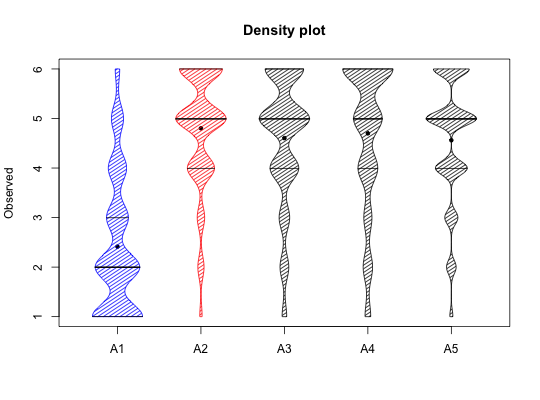

Among the many ways to describe a data set, one is density plot or violin plot of the data. This is similar to a box plot but shows the actual distribution. Median and 25th and 75th percentile lines are added to the display. If a grouping variable is specified, densityBy will draw violin plots for each variable and for each group.
densityBy(x,grp=NULL,grp.name=NULL,ylab="Observed",xlab="",main="Density plot",density=20, restrict=TRUE,xlim=NULL,add=FALSE,col=NULL,pch=20,scale=NULL, ...) violinBy(x,grp=NULL,grp.name=NULL,ylab="Observed",xlab="",main="Density plot",density=20, restrict=TRUE,xlim=NULL,add=FALSE,col=NULL,pch=20,scale=NULL,...)
| x | A matrix or data.frame |
|---|---|
| grp | A grouping variable |
| grp.name | If the grouping variable is specified, the what names should be give to the group? Defaults to 1:ngrp |
| ylab | The y label |
| xlab | The x label |
| main | Figure title |
| density | How many lines per inch to draw |
| restrict | Restrict the density to the observed max and min of the data |
| xlim | if not specified, will be .5 beyond the number of variables |
| add | Allows overplotting |
| col | Allows for specification of colours. The default for 2 groups is blue and red, for more group levels, rainbows. |
| pch | The plot character for the mean is by default a small filled circle. To not show the mean, use pch=NA |
| scale | If NULL, scale the widths by the square root of sample size, otherwise scale by the value supplied. |
| … | Other graphic parameters |
Describe the data using a violin plot. Change density to modify the shading. density=NULL will fill with col. The grp variable may be used to draw separate violin plots for each of multiple groups.
The density plot of the data.
Nothing yet
describe, describeBy and statsBy for descriptive statistics and error.bars and error.bars.by for graphic displays
densityBy(bfi[1:5])#not run #violinBy(bfi[1:5],grp=bfi$gender,grp.name=c("M","F")) #densityBy(sat.act[5:6],sat.act$education,col=rainbow(6))